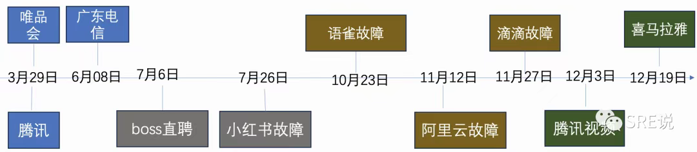
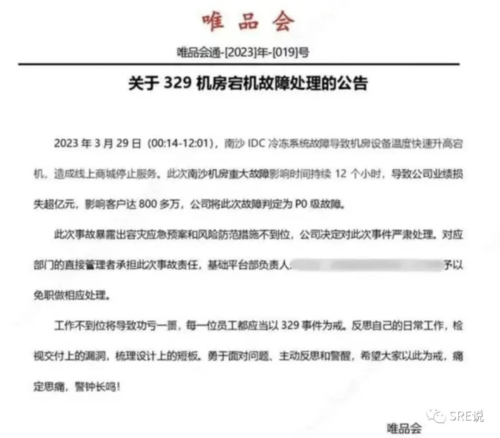

概述
- 本篇梳理互联网行业年度故障
一 2025年
一、支付宝“红包”乌龙（1月16日）：被一根稻草压垮的信任骆驼
故障描述：1月16日下午，大量用户在支付时发现所有交易均出现约20%的立减优惠，并提示为“政府补贴”，引发全网热议与对资金安全的恐慌。支付宝随后回应称，此为1月15日内部营销配置错误所致。
微观场景：一个寻常的午后，支付页面突然弹出的“政府补贴”让全网陷入短暂的狂喜与长久的恐慌。五分钟后，社交媒体上遍布截图与质问：“我的钱安全吗？”
技术本质：一次绕过所有防护的业务配置错误。营销后台的一个错误输入，被自动化系统不加甄别地推送给数亿用户，瞬间击穿了金融工具应有的绝对稳定性预期。
技术风险视角：这起事件标志着，业务逻辑层的缺陷已具备基础设施级的破坏力。在一切皆可配置的时代，一个下拉框的误操作与一次数据中心宕机等效。它迫使我们必须建立与金融安全同级的业务变更“飞行检查单”制度，对核心系统实行零错误预算管理，任何“灰度发布”的侥幸都是对公众信任的挥霍。
二、BOSS直聘“求职黑洞”（3月19日）：一场可预测的“海难”
故障描述：3月19日“金三银四”招聘旺季，BOSS直聘发生持续约187分钟的系统瘫痪，导致约6000万求职者与5300万月活用户无法正常使用，出现面试中断、简历投递失败、企业后台错乱等问题。官方回应为“短时高并发导致卡顿”。
微观场景：面试倒计时3分钟，屏幕永远卡死；187分钟后，机会之窗已然关闭。另一边，HR被2000条错乱的面试邀请淹没。春招黄金期，变成技术“春劫”。
技术本质：可预见的“金三银四”流量洪峰，成了压垮陈旧架构的最后一根稻草。服务器扩容速度（12%）远追不上用户增速（25.3%），移动互联网初期的“老房子”扛不住新世界的风雨。
技术风险视角：这是一场可预测的业务峰值击穿弹性天花板的典型事故。它揭示了当业务高速狂飙而技术铁轨年久失修时，“脱轨”是数学必然。技术团队必须成为“吹哨人”，用压倒性的数据和混沌工程压力测试报告来驱动资源投入，将峰值前的全链路“消防演习”固化为避免灾难的强制性保险，而非可选项。
三、美团全链路故障（4月11日）：超级血管的“心梗”时刻
故障描述：4月11日16时左右，美团App发生大规模服务异常，用户无法下单支付，商家后台无法刷新，骑手端订单加载失败，内部办公系统亦受影响。话题#美团崩了#登上热搜。官方回应为“网络波动”，服务在17时后逐步恢复。
微观场景：晚餐高峰，城市数字生活突然“心梗”。用户无法下单，商家无法接单，骑手在街头彷徨。从点击到送达的超级引擎，因为一个核心零件卡壳而全面停摆。
技术本质：复杂微服务架构下的级联雪崩。一个下游依赖（如订单服务）的故障，像倒下的多米诺骨牌，沿依赖链迅速击穿消费者、商家、骑手乃至内部系统。
技术风险视角：超级平台的效率优势与全局性风险是一体两面。我们为解耦而创造的微服务协同网络，也编织了一张“一损俱损”的故障传导网。必须为每个关键服务设置 “电路熔断器”和定义明确的“应急太平门”（如静态菜单降级）。这些预案不能停留在文档，必须通过混沌工程演练，转化为运维团队的肌肉记忆。
四、京东外卖“闪崩”（4月16日）：20分钟与全天的AB测试
故障描述：4月16日午间，京东外卖因“百亿补贴”活动导致流量激增，系统出现约20分钟的短暂异常。京东外卖官方微博迅速回应致歉，并发放“满15减10”优惠券作为补偿。
微观场景：“百亿补贴”引发抢购潮，系统出现短暂卡顿。约20分钟后，服务基本恢复，一条“抱歉，券来了”的微博将危机转化为一波营销。
技术本质：面对4倍瞬时流量，系统通过快速的弹性伸缩与有效的流控熔断，将影响牢牢锁死在极短的时间窗内。
技术风险视角：此事件与美团故障构成了一次珍贵的行业“A/B测试”。它证明，衡量系统韧性的核心指标，不是永不跌倒，而是跌倒后爬起的速度。这20分钟的差距，本质上是弹性架构预备役与临时救火队的差距。SRE的核心价值不仅是防故障，更是设计并演练故障后的“最优损管方案”，并将其与成熟的公关响应SOP结合，化危机为转机。
五、阿里云域名劫持（6月6日）：数字时代的“治外法权”照进现实
故障描述：6月6日02:57至09:00（北京时间），阿里云核心域名 aliyuncs.com 被劫持，导致其全球OSS、CDN、ACR等依赖服务瘫痪近6小时。原因系美国法院根据诉讼发出限制令，要求 .com 域名管理机构Verisign对涉嫌被恶意利用的域名执行接管。
微观场景：凌晨，全球无数网站和应用因“域名被劫持”而瘫痪。中国最大的云服务商，对其核心.com域名失去了控制，原因竟是一纸来自海外法院的传票。
技术本质：地缘政治与司法管辖权风险，通过互联网基础协议（DNS）完成了精准的“外科手术式打击”。.com不再只是地址，而是受美国法律管辖的数字领土。
技术风险视角：这起事件将 “数字主权风险” 从理论推入现实，揭示全球化企业的技术生命线可能系于海外法庭的判决。它要求技术架构师必须具备地缘政治视野，将“数字资产主权管理”纳入设计框架。为核心业务配置非.com的备用顶级域名（如.cn, .io）并实现自动切换，其重要性已等同于基础设施的异地多活，是从被动承受转向主动风险管理的关键。
六、联通DNS污染（8月12日）：“最后一公里”的信任崩塌
故障描述：8月12日19:40，中国联通部分地区的Local DNS服务器发生异常，将大量正常域名错误解析至 127.0.0.1 ，导致用户网络访问失败。影响主要集中在北京等地，至20:48服务全部恢复。
微观场景：北京等地联通用户突然发现所有App“断网”，诊断显示，微博、微信的域名都被解析到 127.0.0.1 ——自己电脑的地址。
技术本质：运营商Local DNS服务器发生缓存污染或错误配置，导致本地网络“地图”全面错乱。
技术风险视角：这暴露了互联网“最后一公里”基础服务的单点脆弱性。我们默认信任的“网络水电气”，可能成为最不可靠的一环。对于拥有独立客户端的服务，必须考虑终端网络环境的异构性，在客户端设计DNS故障自诊断与降级能力（如自动切换至可信公共DNS），这是提升最终用户体验韧性的重要一环。
七、AWS“空地址”灾难（10月20日）：当守护神机器人“精神错乱”
故障描述：10月20日，AWS美国东部1（us-east-1）区域的DynamoDB服务发生全球性中断，波及60余国超1700万用户。根本原因为内部自动化DNS管理系统出现“竞争条件”，导致DynamoDB的DNS记录被误删。
微观场景：全球无数服务突然无法访问数据库，错误日志指向一个根本不存在的地址。AWS健康面板一片飘红，故障像瘟疫一样在全球蔓延。
技术本质：管理DNS的自动化系统出现“竞争条件”。一个“延迟”的机器人，误以为同伴更新的正确数据是垃圾，并执行了删除。这是典型的自动化反噬。
技术风险视角：我们为消除人为错误而创造的自动化巨兽，正因其内部复杂性和黑盒特性，成为新型的、更难以理解和预防的灾难源。这要求我们对自动化工具实施 “防御性设计” ：为关键操作设置不可逾越的审批闸门、建立独立于自动化流程本身的监控审计链路，并永远对“自动删除核心数据”这类指令保持最高级别的警惕。
八、微软Azure全球中断（10月29日）：枢纽的陷落
故障描述：10月29日，微软Azure因Azure Front Door服务的一次错误配置变更，引发全球性服务中断，Office 365、Teams、Xbox等多个核心服务无法访问，持续数小时。
微观场景：全球用户无法登录Office、Teams，Azure门户自身也告急。故障持续数小时，影响从企业到个人。
技术本质：全球流量枢纽 Azure Front Door 的一次配置错误，引发全球节点间健康检查的连环车祸，导致所有流量调度失效。
技术风险视角：这完美诠释了 “枢纽风险” 的悖论：我们为追求高可用而引入的全局负载均衡器（GLB），其本身已演化为影响范围最大的单一故障点。架构设计必须为此预留 “Plan B逃生通道” ，例如为核心管理或API服务保留不经过GLB、基于IP或备用域名的直接访问路径，这是在极端灾难场景下恢复控制的最后手段。
九、Cloudflare修复性宕机（11月18日）：为拯救病人而误伤器官
故障描述：11月18日晚，Cloudflare为紧急修复高危安全漏洞“React2Shell”而进行变更，意外引发全球性服务中断约20分钟，导致依赖其服务的ChatGPT、Discord、Zoom等大量网站返回500错误。
微观场景：全球大量网站同时返回5xx错误，从ChatGPT到Discord一片哀嚎。约20分钟后恢复，原因是进行了一次紧急安全更新。
技术本质：为修复高危漏洞而进行的紧急数据库变更，意外触发连锁反应，导致核心服务崩溃。安全与稳定在此刻成为死敌。
技术风险视角：在极端复杂的系统中，修复一个已知漏洞的风险，有时可能高于漏洞本身。“变更恐惧”是理性运维者的正常反应。因此，紧急变更流程必须比常规变更更严格，它应包含更小的“爆炸半径”（如在单一节点先试）、更明确的回滚指标和更高级别的协作审批，确保修补行动本身不会演变为一场灾难性的豪赌。
十、支付宝二次故障（12月4日）：信任的“复利”与“亏损”
故障描述：12月4日晚间，“支付宝崩了”再次登上热搜。官方后续通报称，此次异常是由于系统消息服务区局部故障所致，已快速修复，并强调用户资金安全。
微观场景：时隔不到一年，“支付宝崩了”再次刷屏。公众情绪从惊讶迅速转为习惯性质疑：“怎么又来了？”
技术本质：官方归因为“系统消息服务局部故障”。但一年内两次重大中断，强烈暗示问题超出孤立技术点，指向运维体系或架构的深层病灶。
技术风险视角：对于支付这类社会级基础设施，公众信任的积累如复利般缓慢，损耗却如雪崩般迅猛。一次故障消耗的信任资本，十次平稳运行都难以弥补。这凸显了建立 “无咎文化”和深度闭环复盘机制的绝对重要性。每次事件都必须穿透技术表象，触及流程、协作与决策的组织性根因，这是防止悲剧重演、修复信任裂痕的唯一途径。
十一、京东“零元单”漏洞（12月7日）：静默的“业务逻辑海啸”
故障描述：12月7日晚，京东“随心囤”团购券出现重大业务逻辑漏洞，用户申请退款后钱款退回但优惠券仍可使用，导致大量“羊毛党”套利，造成平台重大资损。
微观场景：羊毛党在狂欢中“零元购”，漏洞通过社群和直播疯传。一夜之间，业务逻辑的Bug造成了可能比服务器宕机更直接、更巨大的财务损失。
技术本质：订单、支付、券核销的复杂链路中，退款与销券操作未能实现“原子性”，加之实时风控缺位，导致业务规则出现致命裂缝。
技术风险视角：这标志着，最凶猛的攻击已不再需要穿透网络防火墙，只需找到一个业务逻辑的“认知差”。安全的战场已全面转移至应用层。因此，技术风险监控的边界必须外延， “券库存与资金流水对账不平”这类业务风险指标，应与“CPU使用率100%”享有同等的监控告警优先级。建立横跨风控、研发、运维的联合防线，已成为新的必需品。
十二、快手黑产攻击（12月22-23日）：与“机器人洪水”的阵地战
故障描述：12月22日晚间至23日凌晨，快手平台遭遇大规模、有组织的黑产攻击。攻击者利用自动化工具，发起海量恶意注册、刷量、刷赞及虚假互动请求，旨在消耗平台资源、污染内容生态并进行欺诈。
微观场景：深夜，快手的安全防御系统警报骤响。海量来自虚假身份的互动请求如洪水般涌来，试图冲垮内容推荐算法，并在社区中制造虚假繁荣与欺诈陷阱。
技术本质：这是一场典型的 “资源消耗战”与“数据污染攻击” 。黑产利用“猫池”、接码平台、代理IP池及自动化脚本，模拟真人行为，对平台的计算资源、带宽和核心算法发起饱和攻击。
技术风险视角：此次攻击表明，在数字世界，捍卫真实与公平的成本正变得无比高昂。黑产已实现工业化，平台的安全攻防是一场永不停歇的、消耗巨大的军备竞赛。防御策略必须从传统的“边界防御”转向 “纵深防御”和“智能对抗” 。这需要结合实时行为模式识别、生物特征检测与图神经网络，从海量请求中精准甄别恶意流量。同时，具备快速扩容能力的弹性资源池，是应对此类业务层DDoS攻击、确保服务不被打垮的物理基础。
二 2024年
1 2024年 1月11日腾讯游戏故障

故障描述：
- 1月11日晚，多位网友表示包括《英雄联盟》《王者荣耀》《和平精英》在内的多款腾讯旗下游戏出现服务器崩溃、掉线的问题。“腾讯游戏全部断开”甚至登上热搜， 今天凌晨0时许，有不少网友反馈自己在使用腾讯游戏产品时，出现了掉线、网络崩溃、无法登陆等情况。有玩家称，“自己在团战时突然460原地罚站”，“重新登陆后直接飞出了峡谷”。相关话题随即也冲上社交平台热搜榜前列。
故障原因：
- 腾讯游戏回应称：今夜0时许，因运营商线路故障导致网络波动，部分区域服务器的用户出现掉线和暂时无法登录的情况。
2 2024年4月8日 腾讯云故障 控制台故障

故障描述：
- 2024年4月8日15点23分，腾讯云团队通过告警系统监测到云API服务异常，并迅速收到大量客户反馈无法登录腾讯云控制台。故障持续了约87分钟，从15:23到17:00。此次故障导致部分公有云服务无法使用，包括云函数、文字识别、微服务平台等。
故障影响：
- 故障主要影响了控制面，导致云API服务异常，进而影响了依赖云API的多个云产品线，最终影响了大量用户。
故障原因：
- 确定故障根因为配置数据错误，并设计数据修复方案。版本兼容性与灰度机制：新版本API接口协议变化导致旧版本数据处理异常，灰度机制不足导致异常数据快速扩散。
3 2024年5月9日Google Cloud 误删了 UniSuper 的云账户
故障描述：
- 2024年5月9日，一个前所未有的事件震惊了全球金融科技界：由于谷歌云工程师操作失误，管理着800亿美元资产的 投资公司UniSuper的整个云环境被删除，数十万的用户数据和资产记录被清空。
故障原因：
- Google Cloud方面承认，由于配置过程中的一个失误，导致UniSuper的私有云服务订阅被意外删除。由于账号的删除导致两个地理位置的数据都被删除了。不过幸运的是，UniSuper在另一家云服务商那里存有的备份，这成为了他们的救命稻草。在紧急恢复行动中，这些备份发挥了关键作用，最终帮助UniSuper恢复了服务。
4 2024年7月2日 阿里云故障 光缆挖断

故障描述：
- B站（哔哩哔哩）崩了、小红书崩了、酷安网崩了相继上了微博热搜。阿里云官网显示，上海可用区N出现网络访问异常，阿里云售前客服称，10:04 阿里云监控发现上海地区可用区 N 网络访问异常。阿里云工程师紧急处理后，于 10:35 完成网络切流调度，10:42 访问异常问题恢复。对于“崩了”、“宕机”等问题的赔偿事项，售后客服表示，用户反馈至阿里云后，他们会协助解决。涉及赔偿问题，收到反馈后会处理，用户不必担心
故障影响：
- 阿里云健康看板显示，对象存储，云服务器云数据库、K8S均出现了异常。这次故障并没有去年11月阿里云全球服务不可用那么严重，但半个小时的单可用区核心服务故障仍然称得上“显著故障”
故障原因：
- 机房光缆中断了是此次故障的根本原因，进而导致其他服务异常。
5 2024年7月19日 微软windows蓝屏故障

故障描述：
- 2024年7月19日微软Windows蓝屏故障的原因是由美国网络安全服务提供商CrowdStrike的一次错误更新引起的。具体来说，CrowdStrike的Falcon软件在一次内容更新中存在缺陷，导致运行该软件的Windows电脑出现蓝屏死机（BSOD）现象。这次故障影响了全球多个国家和地区的IT系统，包括航空、铁路、银行等关键基础设施
故障影响：
- 这次的蓝屏事件涉及全球几千万 windows 用户，波及全球，银行、航空、超市等使用 windows 并安装了 CrowdStrike 软件的企业。
故障影响：
- CrowdStrike 作为一款安全软件，在内核级别运行，这意味着它拥有与操作系统管理员相同的权限等级，能够执行更高级别的安全监控和防护措施。CrowdStrike的Falcon软件在一次内容更新中存在缺陷，导致运行该软件的Windows电脑出现蓝屏死机（BSOD）现象
6 2024年8月9日 网易云故障

故障描述：
- 8 月 19 日下午 2 点半左右，大量网友反馈「网易云音乐」App 无法正常使用，随后“网易云音乐崩了”词条迅速登顶微博热搜，引发了广泛关注与讨论。对于这一大面积的故障，网络上迅速出现各种猜测事故原因的传言，比如删库跑路、服务器迁移、机房起火等等。
故障原因：
- 19 日下午 3 点，「网易云音乐」在官方微博做出回应，称因基础设施故障导致各端无法正常使用。同日下午 5 点左右，服务已基本恢复正常。5 点半，「网易云音乐」进一步澄清，否认了“删库跑路”的传言，并公布了针对这次事故的补偿权益。19 日晚，「网易云音乐」在微博回复了媒体报道，称“今天下午在业务扩容中出现了技术事故”。一位来自网易内部的技术人员透露，此次事故可能与网易在贵州机房的迁移有关。网易二季度刚刚完成贵州机房的迁移，新机房的投入使用评估过程中就存在较高的风险。尽管前期内部评估认为迁移顺利，但实际上结果却令人担忧，搬迁完成后不久便发生了此次事故。
7 2024年11月11日 蚂蚁故障

故障描述：
- 11月11日，支付宝遭遇服务中断，相关话题迅速登上微博热搜。众多用户报告称，当天上午支付宝出现服务异常，付款时频繁出现“支付失败”、“交易创建失败”和“服务异常”等提示。此外，还有用户反映余额宝提现延迟到账、花呗还款虽扣款成功但账单未清等问题。 故障原因：支付宝官方在11时25分发布声明，解释称：“由于系统消息库出现局部故障，部分用户的支付功能受到影响。此故障不影响用户资金安全，截至上午10时50分，故障已得到修复。对于此次服务中断给用户带来的不便，我们深表歉意。”
8 2024年11月20日 抖音故障
故障描述：
- 2024年11月20日下午，抖音遭遇了技术故障，导致用户体验受到了显著影响。根据网友在社交媒体上的反馈，他们在使用抖音时遇到了多种问题，包括无法打开分享的视频，视频显示为“不见了”，以及无法查看收藏记录和浏览记录。此外，还有用户尝试卸载并重新安装抖音应用，以及误以为是自己网络出现问题。对此，抖音客服迅速做出响应，表示已经注意到用户反馈的问题，并正在进行紧急排查。抖音客服还提到，由于当前进线量较大，服务繁忙，他们正在加速处理，并请用户耐心等待。目前，抖音已经恢复正常，视频可以正常浏览。
故障原因：
- 跟内部的变更有关系导致了容量不足
9 12月2日网易云音乐故障
故障描述：
-
12月2日网易云音乐今晚出现故障，App 页面数据加载失败。故障时间 20 分钟左右。目前相关问题已修复，重新进入网易云音乐即可正常使用。网易云音乐还称，将为受到影响的用户赠送 7 天网易云音乐黑胶 VIP，今日 24 点前直接发放到账。
-

故障原因：
- 开发页面配置错误导致安卓端少量版本的用户首页报错，
10 2024年12月11日，OpenAI故障
故障描述：
- 2024年12月11日，OpenAI遭遇了一场全球性的服务中断，影响了包括ChatGPT、API、Sora、Playground和Labs在内的多项服务。此次中断从下午3:16开始，一直持续到晚上7:38，总计超过四个小时，造成了显著的影响。
故障原因：
- 根据OpenAI事后发布的故障报告，此次故障的直接原因是新部署的监控系统对Kubernetes控制面造成了过大压力。由于控制面故障导致DNS服务依赖Kubernetes，无法立即回滚新部署，从而加剧了故障影响，导致了长时间的服务不可用。https://status.openai.com/incidents/ctrsv3lwd797
11 2024年9月10日，阿里云服务又宕机了。此次宕机的原因是，新加坡可用区C数据中心的机房发生了一场严重的火灾
-
9月10日，阿里云服务又宕机了。此次宕机的原因是，新加坡可用区C数据中心的机房发生了一场严重的火灾。火灾原因是锂电池爆炸，导致机房升温和燃烧。离谱的是，自10日早上8点到11日晚上8点，火灾持续了整整36小时，仍未完全扑灭。
-
根据阿里云发布的事件公告，火灾发生后，阿里云新加坡地域可用区C网络访问出现异常，部分云产品服务出现异常。其中云数据库Redis、MongoDB、RDS MySQL，对象存储OSS，表存储OTS以及云原生大数据计算服务MaxCompute等关键服务受影响。
三 2023年

1 2023-03-29唯品会
- 故障描述：2023-03-29 00:14～12:01 唯品会329机房宕机12小时P0级故障，业绩损失超亿元，影响客户800多万
- 故障原因：南沙机房重大故障的主要原因是南沙 IDC 冷冻系统故障导致机房设备温度快速升高宕机，造成线上商城停止服务。
-
故障影响：持续 12 个小时，由于崩溃时间太长，影响了很多消费者无法正常下单，导致公司业绩损失超亿元，影响客户达 800 多万，公司将此次故障判定为 P0 级故障。与此同时，唯品会认为此次事故暴露出容灾应急预案和风险防范措施不到位，并决定对此次事件严肃处理。对基础平台部负责人做了免职处理。
-

2 2023-03-29 腾讯广州机房故障14+小时
-
故障描述：00:23～15:00 腾讯广州机房故障14+小时 因制冷系统故障，容灾处置中。
-
故障原因：本次事故由广州电信机房冷却系统故障导致，腾讯将其定义为公司一级事故。为此，腾讯对相关部门和领导进行了严肃的问责和处罚，其中包含公司高级执行副总裁、TEG（技术工程事业群）总裁卢山（LS）和 WXG（微信事业群）副总裁周颢（harveyzhou）在内的管理者承担领导责任，被予以通报批评。卢山目前为腾讯总办（腾讯总经理办公室，为公司最高决策机构）成员。此外，TEG 华南数据中心的两位总经理和总监被处以降级和免职处罚，WXG 技术架构部的两位总监和组长当期绩效考核给予 Underperform 等评级（二星级别，最高为五星）。腾讯管理层认为，这次故障暴露了公司在容灾设计和应急预案方面存在的不足，有关业务部门的风险防范意识不到位。
-
故障原因：制冷系统包括了冻水系统和蓄冷系统；利用蓄冷+电力的差价进行削峰填谷；但是因为控制失误导致了故障。
3 2023-06-08 广东电信故障
-
6月8日晚间，广东省通信管理局紧急召集广东电信、广东移动、广东联通、广东广电、广东铁塔相关负责人就广东电信突发网络故障及应急处理情况召开网络运行安全紧急调度会。广东省通信管理局党组书记、局长蔡立志要求广东电信深入查明原因，做好后续处置，加强网络运行保障。
- 广东电信网络罕见地出现了5小时的大面积断网事件，引发社会各界的关注。此次故障的原因目前尚未得到官方的解释，但是从独立电信分析师付亮的看法来看，应该是广东电信核心网某个关键模块出现了故障。此次事件对亿万用户的生产和生活都带来了严重影响，同时也必须引起政府和电信企业等相关方面的重视。为此，应加强电信网络的基础设施建设和安全防护，确保人们的网络使用畅通无阻，避免重大电信网络故障的再次发生。
4 2023-7-6 boss直聘故障
-
7月6日上午，BOSS直聘APP出现短时间服务异常，经过团队抢修已恢复正常。期间为用户带来的不便我们深表歉意。我们将持续优化服务保障。感谢大家一直以来的关注与支持。
5 2023-07-26 小红书iOS版APP大规模闪退
-

-
7月27日凌晨，社交应用小红书的iOS版本出现大规模闪退问题，用户反映卸载重装也无法解决。对此，小红书客服在微博上回应称，这是由于技术故障引起的。他们建议用户遇到无法启动的情况时，可以前往App Store下载最新版本（版本号7.97.2）。部分网友表示，更新后应用可以正常使用。
-
故障原因：客户端重大缺陷 + 处置不合理引发新的崩溃：线上存在部分业务Crash，只能卸载重装或升级App版本解决。
6 2023年10月23日 语雀故障
-
语雀在故障公告中称，10月23日下午，服务语雀的数据存储运维团队在进行升级操作时，由于新的运维升级工具bug，导致华东地区生产环境存储服务器被误下线。受其影响，语雀数据服务发生严重故障，造成大面积的服务中断。为了尽快恢复服务，语雀和数据存储运维团队全力进行数据恢复工作，但受限于恢复方案、数据量级等因素，整体用时较长。
-
针对所有受到上述故障影响的用户，语雀作出了赔偿方案：对个人用户赠送6个月的会员服务；对空间用户会单独制定赔偿方案。
-
除此之外，语雀还披露了改进措施。具体为：升级硬件版本和机型，实现离线后的快速上线。该措施在本次故障修复中已完成；运维团队加强运维工具的质量保障与测试，杜绝此类运维护bug再次发生；缩小运维动作灰度范围，增加灰度时间，提前发现bug；从架构和高可用层面改进服务，为语雀增加存储系统的异地灾备。
-

7 2023年11月12日阿里云故障
-
2023 年 11 月 12 日 17:39 起，阿里云云产品控制台访问及管控 API 调用出现异常、部分云产品服务访问异常，工程师排查故障原因与访问密钥服务 (AK) 异常有关。工程师修订白名单版本后，采取分批重启 AK 服务的措施，于 18:35 开始陆续恢复，19:20 绝大部分 Region 产品控制台和管控 API 恢复。
-

原因：
- 访问密钥服务 (AK）在读取白名单数据时出现读取异常，因处理读取异常的代码存在逻辑缺陷，生成了一份不完整白名单，导致不在此白名单中的有效请求失败，影响云产品控制台及管控 API 服务出现异常，同时部分依赖 AK 服务的产品因不完整的白名单出现部分服务运行异常。
改进措施
- 1、增加 AK 服务白名单生成结果的校验及告警拦截能力。
- 2、增加 AK 服务白名单更新的灰度验证逻辑，提前发现异常。
- 3、增加 AK 服务白名单的快速恢复能力。
- 4、加强云产品侧的联动恢复能力。
8 2023年11月27日滴滴故障
- 事件回顾：11月27日晚，滴滴出行对当天晚间滴滴App服务出现异常进行了回复，滴滴出行称，由于系统故障，今天晚间滴滴App服务出现异常，经技术紧急修复，目前正陆续恢复中。截至27日晚23时28分，经多人测试，该状况尚未恢复。
-
原因：更新的 kubernetes master 组件版本与预期的版本不一致，导致一个大集群中的容器全部宕机，两个版本分别为 v1.12 和 v1.20。滴滴弹性云内部的 kubernetes 版本升级在两个月以前就已经在所有机房升级完成，整个升级过程中0故障且业务无感知。kubernetes v1.20版本已经在滴滴弹性云中稳定运行了几个月。因此此次故障猜测是由于误操作导致 kubernetes master 组件由 v1.20 回退至 v1.12 导致。
-

9 12月3日 腾讯视频故障
- 12月3日，大量腾讯用户在社交平台反映，购买的腾讯视频会员出现问题，本来可以看的VIP视频，提示需要开通会员
- 目前腾讯视频出现了短暂技术问题，我们正在加紧修复，各项功能在逐步恢复中。感谢您的耐心等待，由此给您带来的不便我们深感歉意。

-
- 有网友反馈：卸载重装也不管用，重启也不管用；
-

故障原因分析
- 腾讯这次故障从反馈来看，影响最大的应该是vip用户看不了会员视频，因为很多用户开始重装APP，但还是不行；应该可以判断是服务端的问题。
- 另外vip用户很多服务都看不了，端上识别不出来是vip用户，从这次故障来看应该是会员账号体系出现了。
10 12月19日 喜马拉雅故障

- 12月19日，“喜马拉雅崩了”登上微博热搜，有网友反映喜马拉雅App出现崩溃状况，无法正常使用或聆听节目。
- 随后，喜马拉雅官博发文致歉，称问题目前已紧急修复，不会影响用户的会员等权益，同时将抽奖送出5张喜马VIP月卡作为补偿。
四 2022年
一 6月21日 Cloudflare发生故障，影响其19个数据中心的流量
二 12月18日，阿里云香港Region可用区C发生大规模服务中断事件
- 关于阿里云香港Region可用区C服务中断事件的说明
北京时间2022年12月18日，阿里云香港Region可用区C发生大规模服务中断事件。经过复盘，我们在这里向大家进一步说明故障情况、问题分析和改进措施。
处理过程
12月18日08:56，阿里云监控到香港Region可用区C机房包间通道温控告警，阿里云工程师介入应急处理，通知机房服务商进行现场排查。09:01，阿里云监控到该机房多个包间温升告警，此时工程师排查到冷机异常。09:09，机房服务商按应急预案对异常冷机进行4+4主备切换以及重启，但操作失败，冷水机组无法恢复正常。09:17，依照故障处理流程，启动制冷异常应急预案，进行辅助散热和应急通风。尝试对冷机控制系统逐个进行隔离和手工恢复操作，但发现无法稳定运行，联系冷机设备供应商到现场排查。此时，由于高温原因，部分服务器开始受到影响。
自10:30开始，为避免可能出现的高温消防问题，阿里云工程师陆续对整个机房计算、存储、网络、数据库、大数据集群进行降载处理。期间，继续多次对冷机设备进行操作，但均不能保持稳定运行。
12:30，冷机设备供应商到场，在多方工程师诊断下，对冷塔、冷却水管路及冷机冷凝器进行手工补水排气操作，但系统仍然无法保持稳定运行。阿里云工程师对部分高温包间启动服务器关机操作。14:47，冷机设备供应商对设备问题排查遇到困难，其中一个包间因高温触发了强制消防喷淋。15:20，经冷机设备商工程师现场手工调整配置，冷机群控解锁完成并独立运行，第1台冷机恢复正常，温度开始下降。工程师随后继续通过相同方法对其他冷机进行操作。18:55，4台冷机恢复到正常制冷量。19:02，分批启动服务器，并持续观察温升情况。19:47，机房温度趋于稳定。同时，阿里云工程师开始进行服务启动恢复，并进行必要的数据完整性检查。
21:36，大部分机房包间服务器陆续启动并完成检查，机房温度稳定。其中一个包间因消防喷淋启动，未进行服务器上电。因为保持数据的完整性至关重要，工程师对这个包间的服务器进行了仔细的数据安全检查，这里花费了一些必要的时间。22:50，数据检查以及风险评估完成，最后一个包间依据安全性逐步进行供电恢复和服务器启动。
服务影响
12月18日09:23，香港Region可用区C部分ECS服务器开始出现停机，触发同可用区内宕机迁移。随着温度继续升高，受影响的服务器停机数量持续增加，客户业务开始受到影响，影响面扩大到香港可用区C的EBS、OSS、RDS等更多云服务。
阿里云香港可用区C的故障，没有直接影响客户在香港其他可用区运行的业务，但影响了香港Region ECS管控服务（Control Plane）的正常使用。因大量可用区C的客户在香港其他可用区新购ECS实例，从12月18日14:49开始，ECS管控服务触发限流，可用性最低跌至20%。客户在使用RunInstances/CreateInstance API购买新ECS实例时，如果指定了自定义镜像，部分实例在购买成功之后会出现启动失败的现象，由于自定义镜像数据服务依赖可用区C的单AZ冗余版本的OSS服务，无法通过重试解决。此时，部分Dataworks、k8s用户控制台操作也受到了故障影响。API完全恢复可用为当日23:11。
12月18日10:37，阿里云香港可用区C的部分存储服务OSS开始受到停机影响，此时客户暂不会感知，但持续高温会导致磁盘坏道，影响数据安全，工程师对服务器进行停机操作，从11:07至18:26中断了服务。阿里云在香港Region可用区C提供了2种类型的OSS服务，一种是OSS本地冗余LRS服务（通常叫单AZ冗余服务），仅部署在可用区C；另一种是OSS同城冗余ZRS服务（通常叫3AZ冗余服务），部署在可用区B、C和D。在此次故障中，OSS同城冗余ZRS服务基本没有受到影响。可用区C的OSS本地冗余服务中断时间较长，因不支持跨可用区切换，需要依赖故障机房的恢复。从18:26开始，存储服务器重新分批启动。其中，单AZ本地冗余LRS服务有部分服务器因消防问题需要做隔离处理。恢复服务前，我们必须要确保数据可靠性，花费了较多的时间进行完整性检验工作。直至12月19日00:30，这部分OSS服务（单AZ冗余服务）才恢复了对外服务能力。
阿里云网络少量单可用区产品（如：VPN、Privatelink以及少量GA实例）在此次故障中受到影响。12月18日11:21，工程师启动网络产品可用区容灾逃逸，12:45完成SLB等大部分网络产品可用区容灾逃逸，13:47NAT产品完成收尾逃逸。除上述少量单可用区产品以外，各网络产品在故障期间保持了业务连续性，NAT有分钟级业务受损。
12月18日10:17开始，阿里云香港Region可用区C部分RDS实例出现不可用的报警。随着该可用区受故障影响的主机范围扩大，出现服务异常的实例数量随之增加，工程师启动数据库应急切换预案流程。截至12:30，RDS MySQL与Redis、MongoDB、DTS等大部分跨可用区实例完成跨可用区切换。部分单可用区实例以及单可用区高可用实例，由于依赖单可用区的数据备份，仅少量实例实现有效迁移。少量支持跨可用区切换的RDS实例没有及时完成切换。经排查是由于这部分RDS实例依赖了部署在香港Region可用区C的代理服务，由于代理服务不可用，无法通过代理地址访问RDS实例。我们协助相关客户通过临时切换到使用RDS主实例的地址访问来进行恢复。随着机房制冷设备恢复，21:30左右绝大部分数据库实例恢复正常。对于受故障影响的单机版实例及主备均在香港Region可用区C的高可用版实例，我们提供了克隆实例、实例迁移等临时性恢复方案，但由于底层服务资源的限制，部分实例的迁移恢复过程遇到一些异常情况，需要花费较长的时间来处理解决。
我们注意到，同时在多个可用区运行业务的客户，在这次事件中依然可以维持业务运行。对于业务需要绝对高可用的客户，我们持续建议您采用全链路多可用区的业务架构设计，以应对各种可能的意外事件。
问题分析与改进措施
1、冷机系统故障恢复时间过长
原因分析：机房冷却系统缺水进气形成气阻，影响水路循环导致4台主冷机服务异常，启动4台备冷机时因主备共用的水路循环系统气阻导致启动失败。水盘补水后，因机房冷却系统的群控逻辑，无法单台独立启动冷机，手工修改冷机配置，将冷机从群控调整为独立运行后，陆续启动冷机，影响了冷却系统的恢复时长。整个过程中，原因定位耗时3小时34分钟，补水排气耗时2小时57分钟，解锁群控逻辑启动4台冷机耗时3小时32分钟。
改进措施：全面检查机房基础设施管控系统，在监控数据采集层面，扩大覆盖度，提升精细度，提高对故障的排查和定位速度；在设施管控逻辑层面，确保系统自动切换逻辑符合预期，同时保证手工切换的准确性，防止内部状态死锁从而影响故障的恢复。
2、现场处置不及时导致触发消防喷淋
原因分析：随着机房冷却系统失效，包间温度逐渐升高，导致一机房包间温度达到临界值触发消防系统喷淋，电源柜和多列机柜进水，部分机器硬件损坏，增加了后续恢复难度和时长。
改进措施：加强机房服务商管理，梳理机房温升预案及标准化执行动作，明确温升场景下的业务侧关机和机房强制关电的预案，力求更简单有效，并通过常态化演练强化执行。
3、客户在香港地域新购ECS等管控操作失败
原因分析：ECS管控系统为B、C可用区双机房容灾，C可用区故障后由B可用区对外提供服务，由于大量可用区C的客户在香港其他可用区新购实例，同时可用区C的ECS实例拉起恢复动作引入的流量，导致可用区 B 管控服务资源不足。新扩容的ECS管控系统启动时依赖的中间件服务部署在可用区C机房，导致较长时间内无法扩容。ECS管控依赖的自定义镜像数据服务，依赖可用区C的单AZ冗余版本的OSS服务，导致客户新购实例后出现启动失败的现象。
改进措施：全网巡检，整体优化多AZ产品高可用设计，避免出现依赖OSS单AZ和中间件单AZ的问题。加强阿里云管控平面的容灾演练，进一步提升云产品高可用容灾逃逸能力。
4、故障信息发布不够及时透明
原因分析：故障发生后阿里云启动对客钉群、公告等通知手段，由于现场冷机处理进展缓慢，有效信息不够。Status Page页面信息更新不及时引发客户困惑。
改进措施：提升故障影响和客户影响的快速评估和识别拉取能力。尽快上线新版的阿里云服务健康状态页面（Status Page），提高信息发布的速度，让客户可以更便捷地了解故障事件对各类产品服务的影响。
总结
最后，我们要向所有受到故障影响的客户公开致歉，并尽快处理赔偿事宜。此次香港Region可用区C服务中断事件，对很多客户的业务产生重大影响，也是阿里云运营十多年来持续时间最长的一次大规模故障。稳定性是云服务的生命线，对我们的客户至关重要。我们将尽一切努力从此次事件中吸取经验教训，持续提升云服务的稳定性，不辜负客户所托！
阿里云
2022年12月25日
五 2021年
7 月 13 日晚间，视频网站哔哩哔哩（B 站）出现服务器宕机事故
故障反思
反思一：变更是稳定性的最大威胁。
-
要有效应对变更，我们不仅需要从客观角度出发，还必须考虑主观因素。此外，我们可以利用平台、工具和人工智能技术来提升风险管理的效率和成效。然而，最关键的还是执行严格的流程控制。和人的意识培养，人才是万物的尺度。
-

反思二：极端情况的的应对最有效的手段还是多活架构和逃生能力，这个已经从多个重大故障中得到了证明。
-
很多公司都在提多活的建设，多活建设最重要的是演练和使用，已经很多次故障验证了如果日常的验证不够是无法做故障的时候做出即时的响应。
-

反思三：绝不能忽视最后一套保险——备份和恢复机制。
-
数据丢失可能导致灾难性后果，因此我们必须时刻关注备份的有效性。
-

反思四：无论技术发展到何种地步，稳定性始终是核心基石。
- 稳定性是那个至关重要的‘1’，没有它，即便是如日中天的OpenAI，一旦发生故障，再先进的技术也将变得毫无价值。